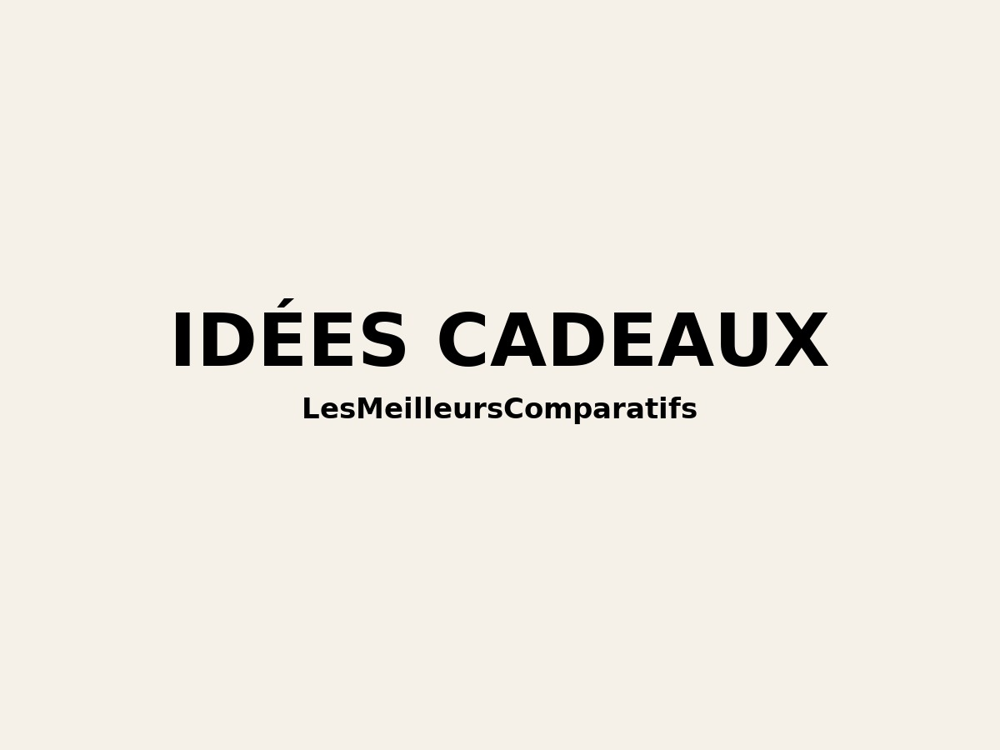

üéÅ Top 10 des meilleurs cadeaux pour la f√™te des grands-parents 2025
Le dimanche 5 octobre 2025, c’est la fête des grands-parents. Pour vous aider à choisir un présent à la fois utile, simple et touchant, voici notre sélection de 10 idées concrètes disponibles sur Amazon, adaptées à différents profils et budgets.
Sommaire
- Cadre photo connecté Nixplay
- Plaid chauffant Beurer
- Tablette simplifiée Facilotab
- Montre santé Withings ScanWatch
- Panier gourmand Comptoir de Mathilde
- Liseuse Kindle Paperwhite
- Machine à café Nespresso Essenza Mini
- Purificateur d’air Philips 3000i
- Tensiomètre électronique Omron
- Coussin de massage Naipo Shiatsu
1) Cadre photo connecté Nixplay
Recevoir des photos des enfants et petits-enfants directement dans le salon, sans manipulations compliquées : c’est l’intérêt du cadre Nixplay. Via une application simple, toute la famille peut envoyer des clichés (et parfois de courtes vidéos) qui s’affichent automatiquement.
- Points forts : appli intuitive, écran net, partage familial facile, Wi-Fi stable.
- Points faibles : nécessite internet ; prix plus élevé qu’un cadre classique.
Voir sur Amazon
2) Plaid chauffant électrique Beurer
Pour les soirées fraîches, le plaid chauffant Beurer apporte un confort immédiat. Plusieurs niveaux de chaleur, textile doux, arrêt automatique : simple et rassurant.
- Points forts : réglages de chaleur, lavable (après déconnexion), faible consommation, sécurité intégrée.
- Points faibles : câble parfois court ; chauffe qui peut diminuer après plusieurs années.
Voir sur Amazon
3) Tablette simplifiée Facilotab
Une tablette pensée pour débuter sereinement : grosses icônes, interface claire, assistance. Parfaite pour les appels vidéo, mails et photos, sans se compliquer la vie.
- Points forts : ergonomie senior, assistance, compatibilité apps (WhatsApp/Skype, Gmail, Photos).
- Points faibles : moins puissante qu’une tablette haut de gamme ; tarif au-dessus des modèles Android basiques.
Voir sur Amazon
4) Montre connectée santé Withings ScanWatch
Discrète et élégante, la ScanWatch suit fréquence cardiaque, sommeil, oxygénation, activité — et peut détecter une chute. Une tranquillité d’esprit au quotidien.
- Points forts : design classique, autonomie longue, mesures santé complètes, appli claire.
- Points faibles : configuration initiale ; prix élevé selon les versions.
Voir sur Amazon
5) Panier gourmand Comptoir de Mathilde
Un coffret prêt à offrir, combinant douceurs sucrées/salées de qualité artisanale. Le plaisir simple qui fait toujours mouche — à partager en famille.
- Points forts : produits de qualité, présentation soignée, plusieurs thèmes au choix.
- Points faibles : vérifier la présence d’alcool ou d’allergènes selon les profils.
Voir sur Amazon
6) Liseuse Kindle Paperwhite
Le plaisir de lire sans fatigue visuelle : écran antireflet, rétroéclairage confortable, autonomie de plusieurs semaines et catalogue immense.
- Points forts : lisibilité top, légèreté, autonomie, choix de livres.
- Points faibles : nécessite un peu d’habitude au début ; usage centré lecture.
Voir sur Amazon
7) Machine à café Nespresso Essenza Mini
Compacte, simple et rapide : l’Essenza Mini prépare un espresso régulier sans réglages compliqués. Un petit rituel qui améliore le quotidien.
- Points forts : ultra-simple, peu encombrante, capsules variées, design discret.
- Points faibles : capsules à racheter ; réservoir d’eau petit.
Voir sur Amazon
8) Purificateur d’air Philips 3000i
Pour un air intérieur plus sain : le 3000i élimine poussières, allergènes et particules fines, ajuste automatiquement sa puissance et reste discret.
- Points forts : efficace sur grande surface, appli intuitive, mode auto, silencieux.
- Points faibles : prix ; filtres à remplacer régulièrement.
Voir sur Amazon
9) Tensiomètre électronique Omron
Pour surveiller sa tension artérielle à domicile en toute simplicité. Les modèles Omron sont réputés pour leur fiabilité et leur facilité d’usage.
- Points forts : mesures rapides et précises, mémoire intégrée, usage autonome.
- Points faibles : brassard parfois moins confortable ; fonctionnalités concentrées sur l’essentiel.
Voir sur Amazon
10) Coussin de massage Naipo Shiatsu
Massage efficace de la nuque, des épaules ou du dos, avec têtes rotatives chauffantes. Parfait pour se détendre facilement à la maison.
- Points forts : massage convaincant, chaleur apaisante, polyvalent.
- Points faibles : un peu encombrant ; nécessite une prise à proximité.
Voir sur Amazon
Conseils pour bien choisir
- Profil : techno, confort, santé, lecture… partez de leurs habitudes.
- Sim-pli-ci-té : préférez des appareils faciles (gros boutons, appli claire, notices FR).
- Entretien : filtres, capsules, recharges… pensez au coût dans la durée.
- Message : accompagnez le cadeau d’un mot ou d’une photo : l’intention compte beaucoup.
*En tant que Partenaire Amazon, ce site peut réaliser un bénéfice sur les achats remplissant les conditions requises.
← Retour à la catégorie Cadeaux